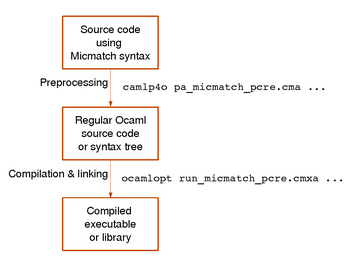

Mikmatch ![[difficulty = 2 camels]](/mjambon2016/2camels.png "difficulty = 2 camels (requires a knowledge of OCaml's basics)")
OCaml Pattern Matching + Regexps
| Tutorial |
| Micmatch reference manual (Camlp5) |
| Mikmatch reference manual (new Camlp4) |
| Download |
| Design issues |
| Mailing-list |
Mikmatch vs. Micmatch
Mikmatch and Micmatch refer to two implementations of the same thing. Mikmatch works with the official distribution of Camlp4, while Micmatch works with Camlp5 which is based on the original design of Camlp4.
Introduction
The goal of Micmatch is to make text-oriented programs even easier to write, read and run without losing the unique and powerful features of Objective Caml (OCaml).
Micmatch provides a concise and highly readable syntax for regular expressions, and integrates it into the syntax of OCaml thanks to Camlp4.
The implementation of Micmatch consists essentially of:
|
 |
Micmatch is a syntax extension of OCaml which is built on top of existing libraries that provide regular expression engines such as the Perl-Compatible Regular Expressions library (PCRE). Regular expressions are compiled at the same time as the rest of the program, and syntax errors are precisely highlighted just like in the rest of the OCaml program. This brings substantial comfort, safety and productivity to the programmer.
Micmatch is being actively maintained. Thank you for reporting any bug you may find to micmatch@googlegroups.com. Comments and suggestions are also highly appreciated.
A taste of Micmatch
Micmatch is a syntax extension of the pattern matching constructs of Objective Caml for matching and extracting substrings with regular expressions. Micmatch tries to stay as close as possible to the spirit of OCaml.
Let's consider the problem of finding if a message starts with hello or not. In OCaml, we can only match whole strings using the general pattern-matching system like this:
# (* Test if msg is Hello or hello *) let msg = "hello" in match msg with "Hello" "hello" -> true _ -> false;; - : bool = true
When our data is already structured, say as a list of tokens, we can conveniently test the head of the list:
# (* Test if the head of a list of tokens is `Hello and return the name of the recipient or None *) let msg = [ `Hello; `Who "you"; `Bye ] in match msg with `Hello :: `Who name :: _ -> Some name _ -> None;; - : string option = Some "you"
However, OCaml does not provide a simple mechanism to look inside of strings and extract the interesting pieces all in one place. Micmatch provides a syntax extension which integrates in-place regular expressions into the native pattern-matching of OCaml:
# (* Test if the string starts with Hello or hello and return the name of the recipient or None *) let msg = "Hello you" in match msg with RE ["Hh"]"ello" space+ (alpha+ as name) -> Some name _ -> None;; - : string option = Some "you"
Do you like it? Many other features are offered by Micmatch! They are described in the following documents:
- the tutorial
- the reference manual
Practical issues
Installation
The easiest way to install Micmatch is from GODI.
Alternatively, it can be downloaded and installed
manually using OCaml 3.07, 3.08 or 3.09.
See the INSTALL file of
the archive.
Compilation with Micmatch as a preprocessor
For scripting (writing one-file programs),
you just need to use micmatch as a
replacement for ocaml.
On Unix systems, it is possible to make the scripts self-executable
by adding #!/usr/bin/micmatch or
#!/usr/bin/env micmatch at the beginning of the file
like in the following example:
#! /usr/bin/env micmatch (* This script reads lines of input and inserts line numbers as new comments (starting with '#') or at the beginning of existing comments. *) let _ = let n = ref 0 in Micmatch.Text.iter_lines_of_channel (fun line -> let code, comment = match line with RE (_* Lazy as code) "#" (_* as comment) -> code, comment code -> code, "" in incr n; Printf.printf "%s# %i %s\n" code !n comment) stdin
In programs that are compiled with ocamlc or
ocamlopt, the code in the Micmatch syntax must be explicitely
preprocessed with camlp4o or camlp4r
and the library pa_micmatch_pcre.cma before actually compiling.
The linking phase requires the Pcre library and the runtime library for
micmatch (run_micmatch_pcre).
The now-recommended approach
to compile programs which require some Camlp4
preprocessing is
the one
described there which uses
ocamlfind, OCamlMakefile and
camlp4find.
If you are interested,
commands for compiling and linking with ocamlfind are:
ocamlfind ocamlopt -c -syntax camlp4o \
-package micmatch_pcre \
hello.ml
ocamlfind ocamlopt -o hello -syntax camlp4o \
-package micmatch_pcre \
-linkpkg hello.cmx
Without ocamlfind, where $MICMATCHDIR is the directory where the library files have been installed, and $PCREDIR is where PCRE-OCaml has been installed:
ocamlopt -c -I $MICMATCHDIR \
-pp "camlp4o -I $MICMATCHDIR pa_micmatch_pcre.cma" \
hello.ml
ocamlopt -o hello -I $MICMATCHDIR -I $PCREDIR\
pcre.cmxa run_micmatch.cmxa hello.cmx
A sample Makefile is also available
[view|save].
It uses OCamlMakefile.
Download
Micmatch for OCaml 3.09 + old Camlp4
This software is distributed under a BSD license. The latest version that works with the old Camlp4 is 0.700.
Micmatch for OCaml 3.09, 3.10 + Camlp5
This software is distributed under a BSD license. The current version is 1.0.0. The first version that works with Camlp5 is 1.0.0 and offers the same exact features as release 0.700. See the history of changes.
| Latest version: | micmatch.tar.gz | micmatch.tar.bz2 | micmatch-1.0.0.tar.gz | micmatch-1.0.0.tar.bz2 |
Mikmatch for OCaml 3.10 + new Camlp4
This software is distributed under a BSD license. Mikmatch is the implementation of Micmatch for the "new Camlp4", i.e. Camlp4 that ships with the core OCaml distribution starting from version 3.10. See the history of changes.
| Latest version: | mikmatch-1.0.0.tar.gz | mikmatch-1.0.0.tar.bz2 |
Mikmatch for OCaml 3.11 + new Camlp4
This software is distributed under a BSD license. Mikmatch is the implementation of Micmatch for the "new Camlp4", i.e. Camlp4 that ships with the core OCaml distribution starting from version 3.10. This particular version works with Camlp4 3.11.0 and 3.11.1 and does not work with earlier or later versions. See the history of changes.
| Latest version: | mikmatch-1.0.2.tar.gz | mikmatch-1.0.2.tar.bz2 |
Mikmatch for OCaml 3.12 + new Camlp4
This software is distributed under a BSD license. Mikmatch is the implementation of Micmatch for the "new Camlp4", i.e. Camlp4 that ships with the core OCaml distribution starting from version 3.10. This particular version works with Camlp4 3.12 and does not work with earlier versions. See the history of changes. Download it here.
Development versions
The development version of Mikmatch is hosted on GitHub.
Acknowledgements
Many concepts found in Micmatch were inspired on discussions on caml-list@inria.fr and from existing software. The following sofware has been important for Micmatch:
- Camlp4
- OCaml
- ocamllex
- pa_ocamllex
- Camlp4 utilities from Regexp/OCaml (regexp-pp)
- PCRE
- PCRE-OCaml
Thanks to their respective authors.